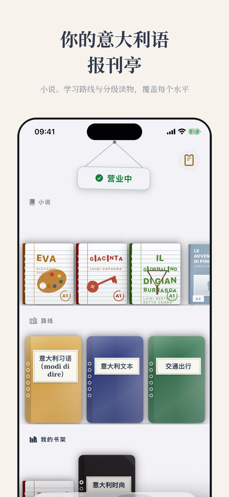
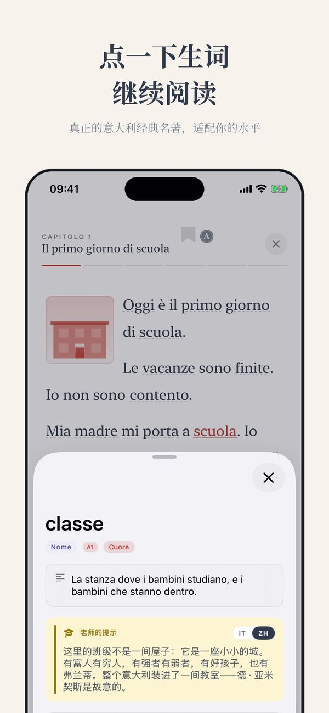
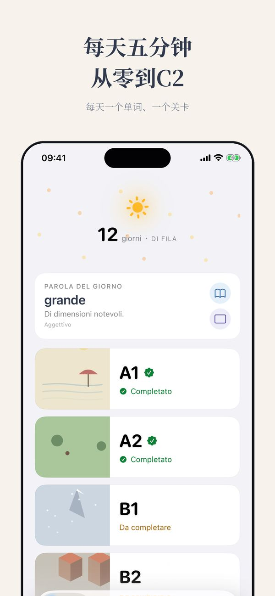
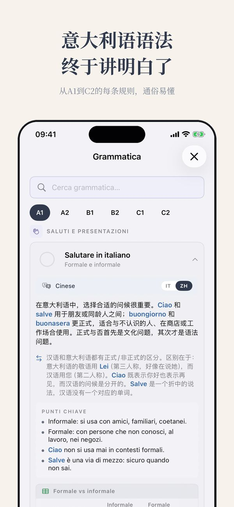
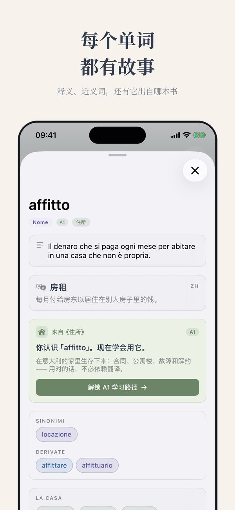
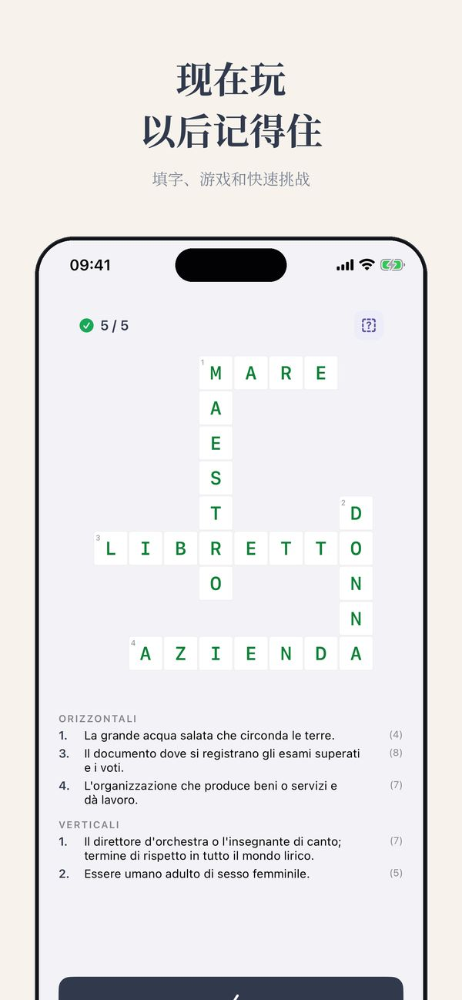

写给在意大利生活的人
居住登记和市政厅的意大利语
居住登记几乎打开一切：家庭医生、学校、银行。
你需要的词
| la residenza | 居住登记 |
| l'anagrafe | 户籍处 |
| il certificato di residenza | 居住证明 |
| il cambio di residenza | 变更居住地 |
| la carta d'identita' | 身份证 |
| lo stato di famiglia | 家庭状况证明 |
| l'autocertificazione | 自我声明 |
| l'ufficio anagrafe | 户籍办公室 |
| la marca da bollo | 印花税票 |
| il domicilio | 居所 |
可以直接使用的句子
- Vorrei fare la residenza.
- Quali documenti devo portare?
- Quanto tempo ci vuole?
- Devo prendere un appuntamento?
记住这一点
提交申请后，市政警察会到你登记的地址核实。这是正常程序。
Ti






A1 课程已开放一半，无需注册
从 A1 开始 ↗︎更多来自 Thuis Italiaans